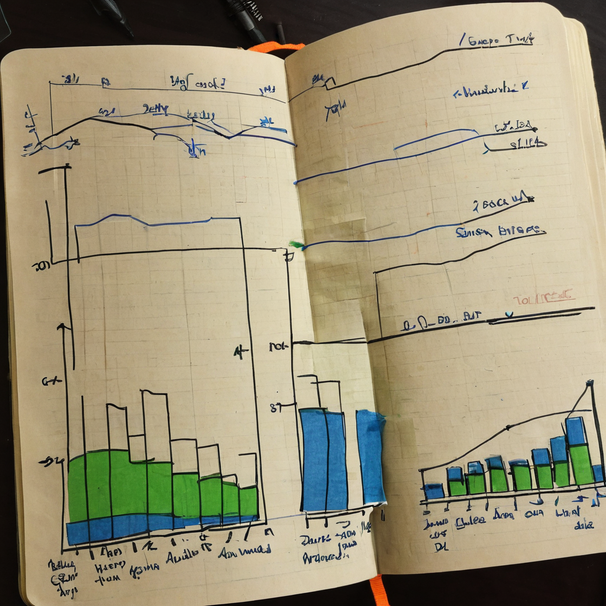

I stopped on this one because it is the kind of post that does not try to sell you anything. No hype, no chart with a rocket emoji, just numbers. Someone pulled a quick read on Chia CAT trading activity and posted it. That is exactly the kind of small, honest data point I like bookmarking.
@busymfpurr shared a short breakdown of Chia CAT (Chia Asset Token) trading data. The post listed 936 total trades in a 24 hour window, split across two decentralized exchanges: Dexie at 3,036 XCH in volume and Tibet at 1,969 XCH in volume. It also included a 7 day volume figure of 21,426 XCH. No links, no commentary, just the raw snapshot.

This falls squarely into dashboards and data territory, but it also says something about where Chia's DeFi side actually is right now. A lot of crypto content is vibes and predictions. This is neither. It is someone looking at real trade counts across real decentralized exchanges and sharing what they found.
Dexie and Tibet are both non-custodial DEXes built on Chia, and seeing their numbers side by side is useful because it shows there is more than one place where CAT trading is happening. That matters for anyone trying to understand whether Chia's token ecosystem has actual usage behind it, not just token launches.
What it does: gives a quick pulse check on Chia CAT trading volume and trade frequency across two active DEXes.
Who it helps: anyone tracking Chia ecosystem health, builders deciding where to list a CAT, or people just curious whether Chia DeFi has real trading behind it.
Why it is worth noting: a single day of data is a snapshot, not a trend, but 936 trades and over 21,000 XCH in weekly volume is a concrete number you can compare against next week, next month, or against other chains.
What still needs work: one post is one data point. Without a running dashboard or a repeatable source, it is hard to know if this is a normal day or an unusually active one. Longer term tracking would make this far more useful.
What I would test first: comparing this same snapshot week over week, or checking if either Dexie or Tibet publishes historical volume anywhere builders can pull from directly.
I like seeing this kind of thing pop up in my timeline. It is not flashy, it is just someone paying attention and sharing what the data actually says, which is rarer than it should be in crypto. Chia has always had this quiet, steady builder energy to it, and posts like this feel like a small piece of that: people tracking real usage instead of just talking price.
The one thing I would keep in mind is that this is a single snapshot. I would not read too much into one day's trade count, good or bad. But the fact that there are two independent DEXes with meaningful volume running on Chia right now is a good sign for the ecosystem, and I am glad someone is bothering to look and share it.
If @busymfpurr or anyone else keeps posting these snapshots regularly, that is worth following. A repeatable weekly or monthly view of CAT trading volume across Dexie and Tibet would tell a much clearer story than any single day can. I would also keep an eye on whether trade counts trend up over time, since that tends to say more about real adoption than volume spikes alone.
Source: X post by @busymfpurr URL: https://x.com/i/web/status/2077828920708157810 Retrieved on: 2026-07-16 External references: none provided in the source post